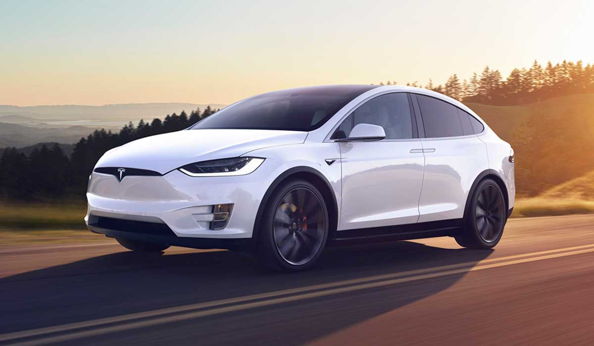

EPÍGRAFE 0. PRESENTACIÓN BREVE DE VUESTRA EMPRESA
Introducción: Green Taxi es una empresa joven que nace con el objetivo de transformar la movilidad urbana hacia un modelo más sostenible, accesible y responsable con el medio ambiente. Nuestro proyecto se centra en ofrecer un servicio de transporte basado exclusivamente en vehículos ecológicos, combinando eficiencia, comodidad y cero emisiones. Apostamos por coches eléctricos de última generación, centrándonos en la experiencia del usuario que sea lo más moderna, rápida, segura y sobre todo ecológica.
Con conductor

Tesla
Eléctrico
EPÍGRAFE 1. La empresa y los grupos de interés. Su relación con la sostenibilidad
En Green Taxi nos movemos solo con coches 100% eléctricos, y todos nuestros grupos de interés forman parte de este enfoque sostenible. Los clientes buscan un transporte limpio; los conductores reciben formación para dar un servicio top; y trabajamos con proveedores que también apuestan por lo ecológico. La ciudad y la gente salen ganando porque reducimos emisiones, y las administraciones ven en nosotros un aliado para una movilidad más verde. Al final, todo gira en torno a cuidar el medio ambiente y movernos sin contaminar.
Definición de grupos de interés: ¿Qué son los grupos de interés? Son todas las personas y entidades que tienen relación con Green Taxi y que influyen o se ven afectadas por nuestro servicio de transporte con coches eléctricos.
- Clientes: porque sin ellos el servicio no tiene sentido.
- Conductores: ya que son quienes garantizan la calidad del servicio.
- Compañías de carga eléctrica: fundamentales para mantener la flota operativa.
- La ciudad: porque nuestra misión principal es mejorar la movilidad y reducir la contaminación urbana.
- Administraciones públicas: ayuntamientos y organismos que regulan, apoyan y supervisan la movilidad sostenible.
Relación entre la empresa y los grupos de interés:
- Clientes: mejor servicio = más comodidad y confianza.
- Conductores: mejores coches y organización = mejores condiciones de trabajo.
- La ciudad: más taxis eléctricos = menos contaminación.
- Talleres: más mantenimiento y revisiones = más trabajo para ellos.
- Compañías de carga eléctrica: más flota = más demanda de carga.
- Administraciones públicas: apoyamos sus planes de movilidad sostenible.
Conflictos potenciales:
- Conductores vs. Clientes: Los clientes quieren precios bajos y rapidez, mientras que los conductores quieren mejores salarios y menos presión de tiempos.
- Conductores vs. Administración pública: La administración puede exigir normas estrictas (horarios, zonas, licencias) que compliquen el trabajo de los conductores.
- Empresa vs. Compañías de carga eléctrica: La empresa quiere costes bajos de carga, pero las compañías buscan rentabilidad y pueden subir precios.
- Empresa vs. Talleres: Nosotros queremos reparaciones rápidas y baratas; los talleres buscan tiempo y beneficios.
- Ciudad vs. Empresa: A veces la ciudad puede limitar zonas de circulación o poner reglas nuevas que afecten al servicio, mientras la empresa quiere operar libremente.
Importancia de los grupos de interés en la sostenibilidad: Los grupos de interés ayudan a la sostenibilidad de Green Taxi porque cada uno aporta algo clave: clientes, conductores, ciudad, talleres, compañías de carga y administraciones públicas.
Papel de los grupos de interés en ASG: Son el motor invisible que hace que las iniciativas Ambientales, Sociales y de Gobernanza funcionen de verdad. Gracias a ellos, Green Taxi es un proyecto sostenible que funciona de verdad y mejora la vida en la ciudad.
EPÍGRAFE 2. La sostenibilidad desde el punto de vista de la empresa: los aspectos ASG
Definición de los aspectos ASG:
Los aspectos ASG hacen referencia a los criterios Ambientales, Sociales y de Gobernanza que guían la sostenibilidad de la empresa.
GreenTaxi se esfuerza por minimizar la huella de carbono mediante el uso de vehículos eléctricos y la optimización de rutas;
en el ámbito social, garantiza condiciones laborales justas y promueve la inclusión y la seguridad de conductores y usuarios;
y en gobernanza, mantiene transparencia en su gestión, responsabilidad en la toma de decisiones y prácticas éticas que aseguran
su sostenibilidad a largo plazo.
Ejemplos prácticos de cada aspecto:
-
Ambiental: GreenTaxi utiliza una flota compuesta al 100% por vehículos eléctricos, logrando una reducción
significativa de emisiones de carbono y gases de efecto invernadero. Además, optimiza las rutas para minimizar el consumo
energético y promueve estaciones de recarga con energía renovable.
-
Social: La empresa fomenta la inclusión laboral ofreciendo empleos estables y condiciones justas a personas
de distintos perfiles, incluidos colectivos en situación vulnerable. También apuesta por la formación continua de los
conductores para garantizar seguridad y calidad en el servicio.
-
Gobernanza: GreenTaxi mantiene transparencia total en su gestión mediante reportes periódicos de
sostenibilidad y operatividad, aplicando políticas estrictas de ética empresarial y un gobierno corporativo responsable.
Relación entre los ASG y la rentabilidad empresarial:
GreenTaxi protege su sostenibilidad financiera gestionando adecuadamente los riesgos ASG: reduce multas y costes ambientales
gracias a su flota eléctrica (ambiental), evita conflictos y mejora su imagen mediante inclusión laboral y condiciones justas
(social), y asegura la confianza de inversores manteniendo transparencia y ética en su gestión (gobernanza). Todo ello
garantiza estabilidad y crecimiento económico a largo plazo.
Beneficios de implementar políticas ASG:
-
Atracción de inversores: El compromiso con la sostenibilidad convierte a GreenTaxi en una empresa atractiva
para inversores responsables y facilita el acceso a financiación verde.
-
Mejora de la reputación: Las prácticas ASG refuerzan la imagen pública y la confianza de clientes, socios
y comunidad, diferenciando a GreenTaxi como referente en transporte sostenible.
-
Reducción de riesgos: La gestión proactiva de riesgos ambientales, sociales y de gobernanza evita sanciones,
conflictos laborales y problemas éticos.
-
Eficiencia operativa: El uso eficiente de recursos energéticos y humanos reduce costes y aumenta la
productividad.
Diseño de estrategias ASG:
GreenTaxi implementa su estrategia ASG mediante un análisis interno de riesgos y oportunidades, la definición de objetivos
claros, la puesta en marcha de acciones concretas, la medición continua de indicadores clave y la adaptación constante de
la estrategia según los resultados obtenidos, manteniendo siempre una comunicación transparente.
Proyectos ASG de GreenTaxi:
- Electrificación total de la flota para reducir emisiones de carbono.
- Instalación de puntos de recarga eléctrica en hogares y estaciones clave.
- Programa de inclusión laboral para colectivos vulnerables.
- Reportes periódicos de sostenibilidad y prácticas de gobernanza ética.
EPÍGRAFE 3. Las Normas Europeas de Información sobre Sostenibilidad (NEIS) y el estado no financiero
Introducción a las NEIS:
Como empresa de movilidad similar a un “Uber”, pero basada exclusivamente en vehículos 100% eléctricos y con opciones
tanto con conductor como de conducción autónoma, GreenTaxi cumple con las principales Normas Europeas de Información
sobre Sostenibilidad (NEIS) y con la normativa europea vigente en materia de sostenibilidad.
Las normas que más afectan a la empresa están relacionadas con la reducción de emisiones de CO₂, la eficiencia energética
de la flota, la gestión responsable de las baterías y el uso transparente y seguro de los datos en los sistemas de
conducción autónoma. Estas regulaciones guían nuestro modelo de negocio para ofrecer un servicio limpio, seguro y alineado
con los estándares europeos.
El estado no financiero:
Para GreenTaxi, el estado no financiero es el informe en el que se muestra cómo la actividad de la empresa impacta en el
medio ambiente, en las personas y en la ética empresarial. Este informe incluye información sobre las emisiones evitadas
gracias a la flota 100% eléctrica, el consumo energético, la gestión de baterías, la seguridad de los vehículos autónomos,
las condiciones laborales y las políticas de privacidad y transparencia.
Importancia del estado no financiero para la empresa:
El estado no financiero es fundamental porque demuestra que el modelo de movilidad sostenible de GreenTaxi es real,
medible y verificable. Además, permite generar confianza en usuarios, reguladores e inversores, y refuerza el compromiso
de la empresa con una movilidad limpia, segura y responsable.
Impacto de las NEIS en las empresas:
Obligaciones legales según las NEIS:
Las NEIS obligan a GreenTaxi a reportar información clara y verificable sobre sostenibilidad, demostrar la reducción de
emisiones, optimizar el uso de la energía en la recarga de la flota, gestionar correctamente las baterías y garantizar
transparencia en el funcionamiento de los sistemas de conducción autónoma.
Beneficios de adoptar las NEIS:
La adopción de las NEIS permite a GreenTaxi mejorar su eficiencia operativa, fortalecer la confianza de los usuarios y
demás grupos de interés, diferenciar su marca como una opción de transporte sostenible y cumplir con la normativa europea,
facilitando el crecimiento y la seguridad regulatoria de la empresa.